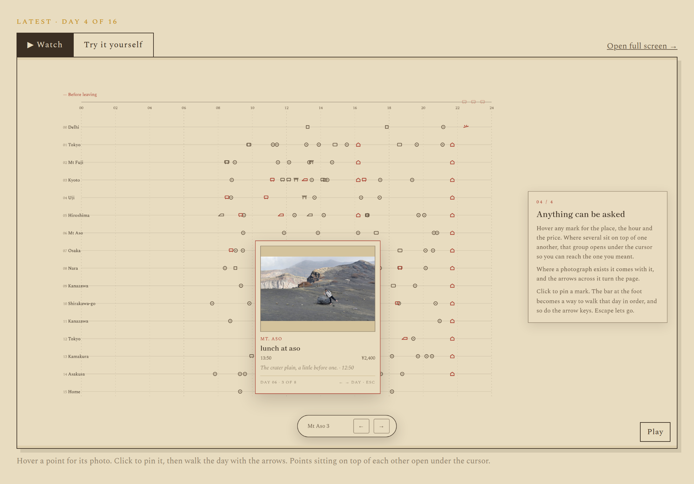

Day 05 of 16
The number that was quietly wrong
3
the day the card kept showing
A thing that fails by going blank is a bug you fix today.
The honest failure
I wrote that fallback, and I wrote it that way on purpose. Degrading to a stale number instead of a blank is the right call for a card on a portfolio. What was missing was anything that would tell me it had happened. The same shape turned up twice more the same day: the page would have quietly reverted to an old video the moment a day had nothing new to record, and the privacy check stopped a build over six bytes of video that happened to look like an email address. Two of the three failed by showing something believable.